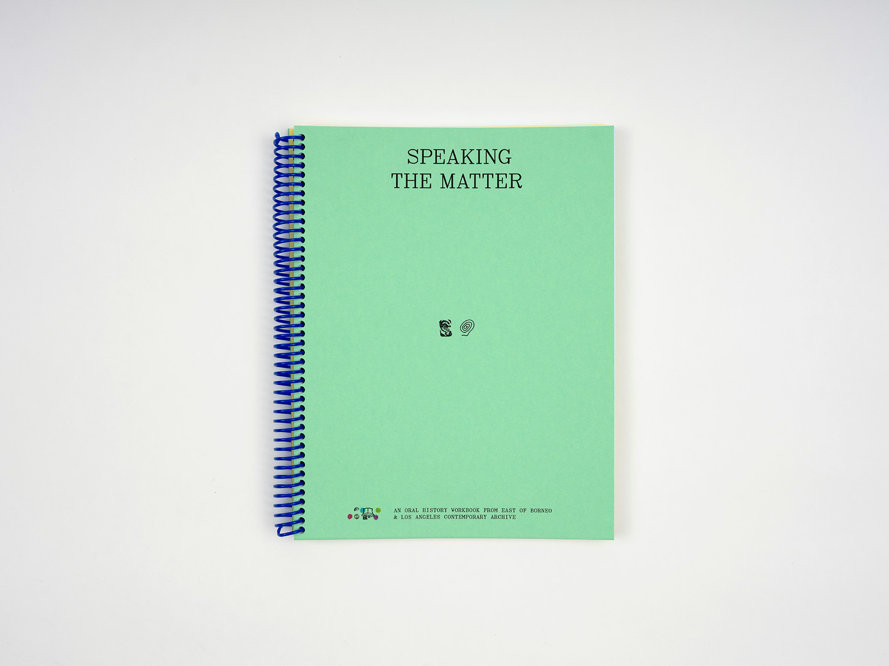
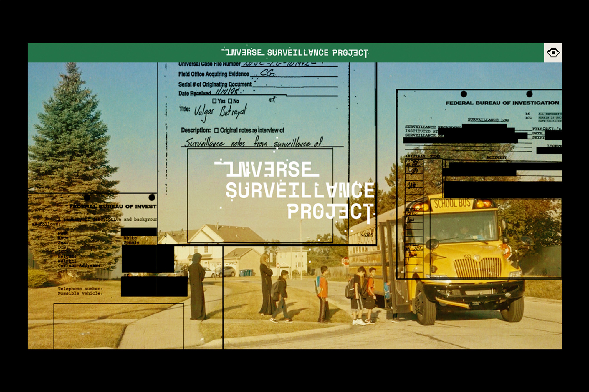
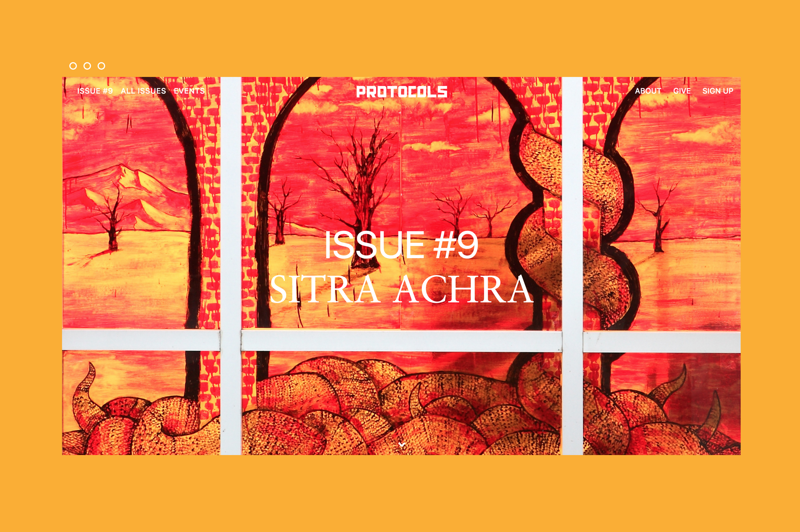

Speaking the Matter An oral history workbook co-published by Los Angeles Contemporary Archive and East of Borneo

Inverse Surveillance Project A multi-media art installation by Assia Boundaoui

Worthy Wine Works Los Angeles Contemporary Archive's natural wine fundraiser.

Movie Nights at Divison Place Movie series screening independently made films from and adjacent to Southeast Asia

Protocols Online journal featuring provocative art and writing from across the global Jewish diaspora